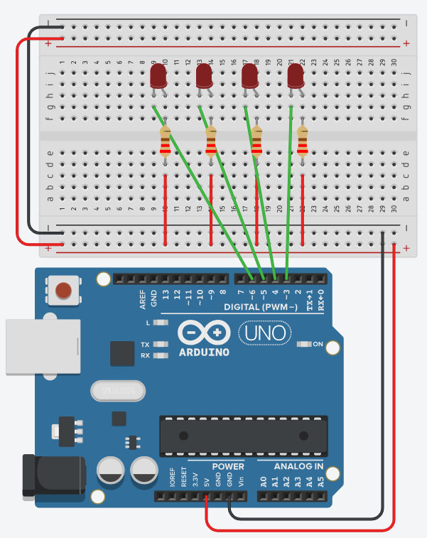

Verbind 4 leds met pinnen 3 tot en met 6 en programmeer een looplicht. Frequentie van het looplicht is 1Hz.

Kijk goed naar het schema en naar de schakeling in onderstaande video. Wordt hier gebruik gemaakt van sourcing of sinking? Welke invloed heeft dat op de schakeling en de code?
Denk eerst zelf na en klap daarna open.
Volg de stroom op het schema. Elke led hangt met de anode via de weerstand aan de plusrail van 5V, en met de kathode aan een pin van de Arduino. De stroom komt dus niet uit de pin, hij loopt naar de pin toe. Dat is sinking.
Voor de schakeling betekent dat: de rails van het breadboard voeren 5V, en de pin is het uiteinde waar de stroom naartoe verdwijnt. In de begeleide oefening van labo 0 hing de led er net omgekeerd in, met de anode aan de pin, en dat is sourcing.
Voor de code betekent het dat je logica omkeert. Er staat enkel spanning over de led wanneer de pin LOW is, want dan is er een verschil tussen de 5V aan de ene kant en de 0V aan de andere kant. Bij HIGH staat er aan beide kanten 5V en blijft de led uit. Je zet een led dus aan met digitalWrite(pin, LOW) en uit met digitalWrite(pin, HIGH).
Frequentie is het aantal volledige cycli per seconde, uitgedrukt in hertz (Hz). Een frequentie van 1Hz betekent dus één volledige cyclus per seconde. Bij dit looplicht is één cyclus: led 1, led 2, led 3, led 4 en dan weer led 1.
De tijd die één cyclus duurt, is de periode T. Frequentie en periode zijn elkaars omgekeerde: T = 1 / f. Voor 1Hz geeft dat T = 1 / 1 = 1 s, ofwel 1000 ms.
Die 1000 ms verdeel je over de stappen van de cyclus. Vier leds zijn vier stappen, dus 1000 / 4 = 250 ms per led. Dat is de waarde die in je delay() komt.
Reken altijd in deze richting: eerst de periode uit de frequentie, dan de periode delen door het aantal stappen. Bij Knight Rider blijft de frequentie 1Hz, maar verandert het aantal stappen, en dan verandert de delay mee.
Sla je oefening op.
Overloop volgende checklist om je oefening zelf te evalueren:
Het is een sinking-schakeling, dus LOW zet
een led aan en HIGH zet hem uit. Uit de 1Hz volgt een
periode van 1000 ms, verdeeld over 4 stappen, dus 250 ms per led.
We bouwen de oplossing in drie stappen op: eerst uitgeschreven zonder lussen en functies, daarna met een eigen functie met parameter, en ten slotte korter met een functie en een for-lus. Uiteraard moet je die stappen niet altijd doorlopen, je kan ook meteen de kortste versie maken. Maar voor beginners is het goed om eerst de logica te begrijpen en stap voor stap te vereenvoudigen. Wandelen voor je kan lopen (pun intended)!
Hier schrijven we elke stap van het looplicht rechtstreeks onder elkaar in de loop().
const int led1 = 3;
const int led2 = 4;
const int led3 = 5;
const int led4 = 6;
const int stapDuur = 250; // 1000 ms gedeeld door 4 leds, dus 1Hz per cyclus
void setup()
{
pinMode(led1, OUTPUT);
pinMode(led2, OUTPUT);
pinMode(led3, OUTPUT);
pinMode(led4, OUTPUT);
// sinking: HIGH = led uit, dus we beginnen met alles uit
digitalWrite(led1, HIGH);
digitalWrite(led2, HIGH);
digitalWrite(led3, HIGH);
digitalWrite(led4, HIGH);
}
void loop()
{
// Led 1 aan en uit
digitalWrite(led1, LOW); // sinking: LOW = led aan
delay(stapDuur);
digitalWrite(led1, HIGH); // sinking: HIGH = led uit
// Led 2 aan en uit
digitalWrite(led2, LOW);
delay(stapDuur);
digitalWrite(led2, HIGH);
// Led 3 aan en uit
digitalWrite(led3, LOW);
delay(stapDuur);
digitalWrite(led3, HIGH);
// Led 4 aan en uit
digitalWrite(led4, LOW);
delay(stapDuur);
digitalWrite(led4, HIGH);
}
Om te vermijden dat we dezelfde drie regels code vier keer kopiëren, stoppen we het aan- en uitzetten van één led in een eigen functie laatBranden() met de pin als parameter (zoals in de begeleide oefening van labo 0).
const int led1 = 3;
const int led2 = 4;
const int led3 = 5;
const int led4 = 6;
const int stapDuur = 250; // 1000 ms gedeeld door 4 leds, dus 1Hz per cyclus
void setup()
{
pinMode(led1, OUTPUT);
pinMode(led2, OUTPUT);
pinMode(led3, OUTPUT);
pinMode(led4, OUTPUT);
// sinking: HIGH = led uit, dus we beginnen met alles uit
digitalWrite(led1, HIGH);
digitalWrite(led2, HIGH);
digitalWrite(led3, HIGH);
digitalWrite(led4, HIGH);
}
void laatBranden(int pin)
{
digitalWrite(pin, LOW); // sinking: LOW = led aan
delay(stapDuur);
digitalWrite(pin, HIGH); // sinking: HIGH = led uit
}
void loop()
{
laatBranden(led1);
laatBranden(led2);
laatBranden(led3);
laatBranden(led4);
}for-lus
Aangezien de vier leds aangesloten zijn op opeenvolgende pinnen (3 tot en met 6), kunnen we een for-lus gebruiken om rechtstreeks over de pinnummers te itereren. Dit maakt zowel de setup() als de loop() heel wat korter.
const int minPin = 3;
const int maxPin = 6;
const int stapDuur = 250; // 1000 ms gedeeld door 4 leds, dus 1Hz per cyclus
void setup()
{
for (int pin = minPin; pin <= maxPin; pin++)
{
pinMode(pin, OUTPUT);
digitalWrite(pin, HIGH); // sinking: HIGH = led uit
}
}
void laatBranden(int pin)
{
digitalWrite(pin, LOW); // sinking: LOW = led aan
delay(stapDuur);
digitalWrite(pin, HIGH); // sinking: HIGH = led uit
}
void loop()
{
for (int pin = minPin; pin <= maxPin; pin++)
{
laatBranden(pin);
}
}Later leer je ook met arrays werken. Daarmee kan je lussen gebruiken zelfs wanneer de pinnen niet opeenvolgend zijn aangesloten.